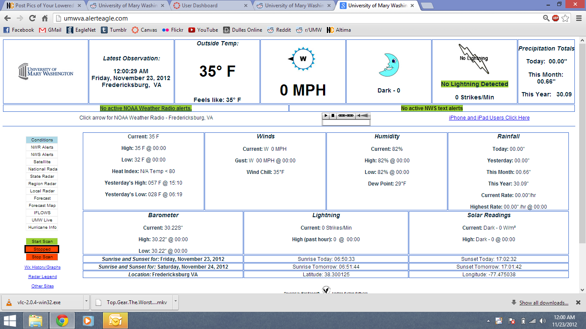
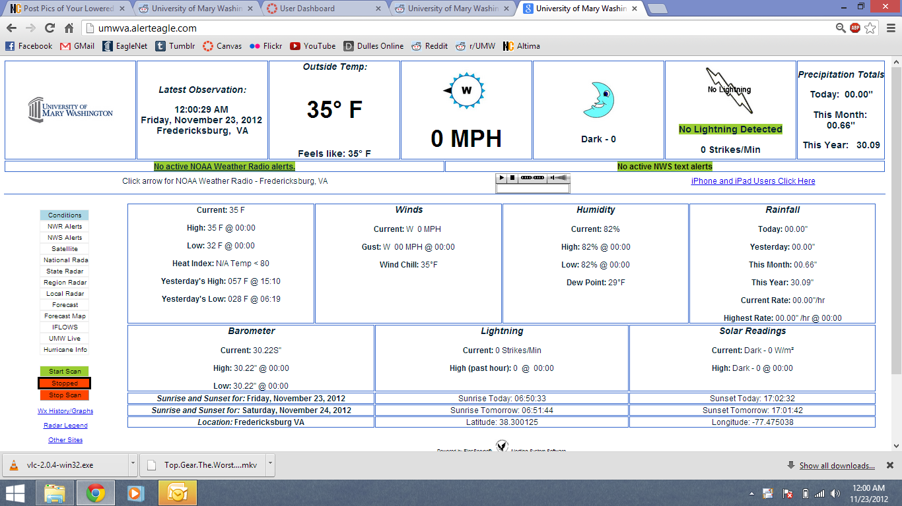

gparvez's Blog
 this is me and jessica. i love her. <3 |
| fghjgdhjghfghfjuyjhgvhgjhgctghuyuy pooo |
|  this is a post lolololkijnhbgvfghkijhbvcfcgbhjmkjhgb |
| Post 1 |
this is me and jessica. i love her. <3 |
| fghjgdhjghfghfjuyjhgvhgjhgctghuyuy pooo |
|  this is a post lolololkijnhbgvfghkijhbvcfcgbhjmkjhgb |
| Post 1 |